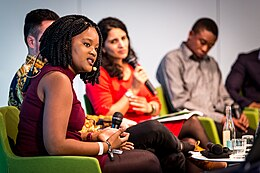

1.Delta de l'Okavango: Situé au nord du Botswana, l'Okavango n'a pas d'embouchure maritime et se déverse dans le désert du Kalahari, irriguant 15 000 km2 du désert. Plusieurs millions d'îles se sont formées autourdes termitières ou des bouquets de végétaux qui retiennent les alluvions.
2. Désert du Kalahari : Le désert aride et semi-aride sablonneux du Kalahari est situé entre les bassins des fleuves Zambèze et Orange. Il couvre une large partie du Botswana et s'étend vers la Namibie et l'Afrique du Sud sur une superficie d'environ 900 000 km². Le Kalahari héberge encore une population de Bochimans, un peuple nomade de chasseurs cueilleurs, qui furent les premiers habitants de l'Afrique australe. Le terme Kalahari dériverait de Kgalagadi, qui signifie « grande soif » en langue tswana.
3. Moremi Game Reserve: Le parc de Morémi, mieux connu sous le nom de Moremi Game Reserve, est un parc national du Botswana situé à l'ouest du delta de l'Okavango. On peut y voir des rois de la jungle tels que des lions, des girafes, des léopards, des éléphants, des guépards, des zèbres ou encore des gnous. Le site est reconnu comme réserve naturelle depuis 1963.
1. Vetkoek :Vetkoeks Les vetkoeks sont également souvent préparés avec un hachis au curry, qui est farci à l'intérieur.
2. Soupe de pois cassés et citrouille :Elle est composée uniquement de deux ingrédients : de la citrouille et des pois cassés avec de l'eau et un peu de sel.

3. Phaphatha:Le phaphatha est une boulette ronde et aplatie originaire du Botswana, souvent cuite à la poêle . En raison de sa taille moyenne à grande, ce pain est généralement utilisé en accompagnement de gros repas, bien qu'il puisse être consommé au petit-déjeuner ou en collation.
1. Tsodilo Hills: Avec l'une des plus fortes concentrations d'art rupestre au monde, Tsodilo est parfois appelé le ''Louvre du désert''. Plus de 4 500 peintures sont conservées dans une zone de seulement 10km2 dans le désert du Kalahari.

2. ISKCON Gaborone (Krishna Balaram Palace) : Il vous procure une immense satisfaction de paix lorsque vous vous asseyez devant le Seigneur Krishna et que vous priez. Son pouvoir vous entoure immédiatement et vous donne la confiance nécessaire pour faire face à tous les défis que la vie peut vous lancer. Au moment où vous traversez les environs et prenez le prasad, vous êtes dans un état d'esprit différent. Une visite incontournable !
3. National Assembly Building: le siège du Parlement botswanais, situé à Gaborone, la capitale du pays. Ce bâtiment, moderne et imposant, reflète à la fois l'architecture contemporaine et l'influence traditionnelle botswanaise. Il abrite l'Assemblée nationale, où les représentants du peuple se réunissent pour discuter et voter sur les lois du pays.
1. Seretse Khama : est un homme politique botswanais, fondateur du Parti démocratique du Botswana en 1962. Il est Premier ministre en 1965, puis premier président de la république du Botswana après l'indépendance, de 1966 à sa mort.
2. Festus Mogae :Festus Gontebanye Mogae, né le 21 août 1939 à Serowe, est un homme d'État botswanais, président de la république du Botswana du 1er avril 1998 au 1er avril 2008.
3. Ian Khama : est un homme d'État botswanais, président de la république du Botswana du 1er avril 2008 au 31 mars 2018, après avoir été vice-président de 1998 à 2008.
1. KhoiSan Maxy:Singer/Songwriter/Comedy/AfroPop/San-Tswana Traditional/House/Gospel
.webp)
2. Culture Spears :Culture Spears est un groupe de musique traditionnelle tswana basé au Botswana. C'est aussi un groupe de danse traditionnelle.
.webp)
3. Puna Gabasiane : Punah Gabasiane est une chanteuse afro-jazz motswana.
1. Moemedi Moatlhaping: est un footballeur botswanais
.webp)
2. Jerome Ramatlhakwane :Jerome Ontiretse Otto Ramatlhakwana est un footballeur botswanais né le 29 mai 1985 à Lobatse. Il évolue au poste d'attaquant et joue au Township Rollers. Il est international botswanais de 2006 à 2014 et le meilleur buteur de l'équipe avec 21 buts.
.webp)
3. Dipsy Selolwane : Diphetogo Selolwane est un footballeur botswanais né le 27 janvier 1978. Il a joué plusieurs matchs avec l'équipe du Botswana.
.webp)
1. Siyanda Mohutsiwa:est une auteure du Botswana et une conférencière reconnue internationalement. Elle a créé aussi le hashtag #IfAfricaWasABar qui a été un phénomène viral en 2015. Elle se décrit comme une panafricaniste. Elle est également connue sur Twitter sous le nom de Siyanda-Panda.
2. Coex'ae Qgam:est une artiste, conteuse et traductrice botswanaise d'ethnie San, connue sous son nom d'artiste Dada. Elle fait partie du peuple Ncoakhoe et parle le naro.

3. Bessie Head: Bessie Head est une écrivaine de langue anglaise, née à Pietermaritzburg (Afrique du Sud) en 1937 et morte en 1986 à Serowe, au Botswana. Bessie Head.
.webp)